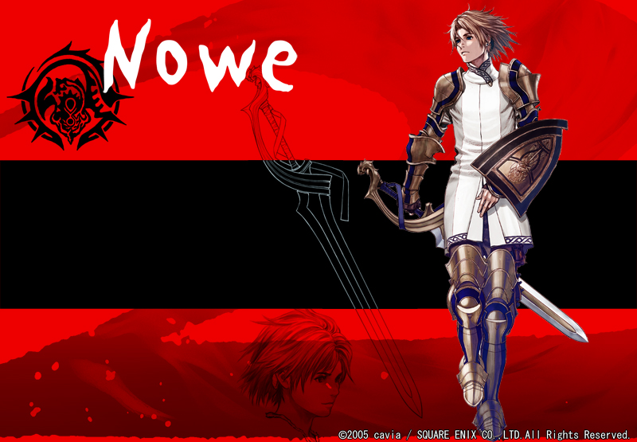

>
>
>
@Nowe
Sex Male Age 18 Height 178cm (cast.勝地 涼）
ドラゴンに育てられた少年。出生については謎に包まれている。8歳の時に封印騎士団によって発見、保護される。
神官長セエレが彼を「救世主」だと名指ししたこと、竜語を操り、ドラゴンを常にはべらしていることなどから、封印騎士団の中には彼を「竜の子」と呼び、畏怖と嫌悪をあらわにする者が多い。
そんな中、団長のオローは彼に愛情を注ぎ、言語や封印騎士団のしきたり、そして剣術を教えた。ノウェもオローを実の父のように慕う。また、オローが同様にして育てていた少女エリスとは幼なじみのような、兄妹のような関係を築く。
三年前、明命の直轄区襲撃事件によってオローを失った以降、騎士団内で彼を庇う者はエリスだけとなった。現団長のジスモアがことさらノウェを嫌っているせいもあり、辛い立場に追いやられている。